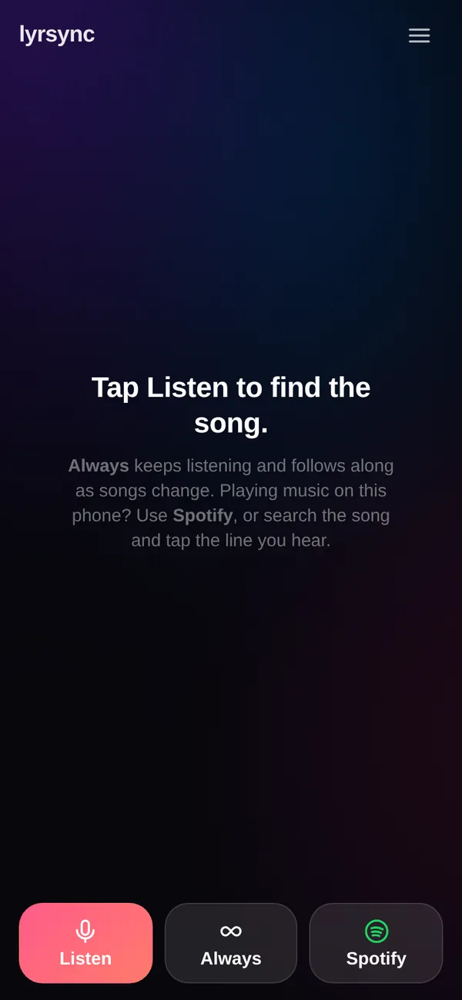
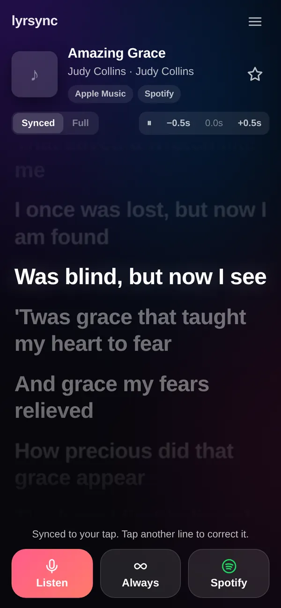

Case study
lyrsync
Hear a song, follow its lyrics in sync on your phone.
- Python
- FastAPI
- Web Audio (AudioWorklet)
- Shazam (shazamio)
- LRCLIB
- PocketBase
- PWA
The problem
Lyrics apps follow your own player, not the song playing in a café or a car. I wanted one tap: listen, recognise, scroll the lyrics in time.
What I built
- The browser records the mic and sends a small 16 kHz mono WAV; the server identifies it and fetches time-synced lyrics.
- Progressive listening (4 s, then longer clips), automatic retries and server-side rate limiting with back-off so the shared IP never gets throttled.
- "Always" mode, a Resync button, and tap-to-sync for music playing on the same phone (iOS can't share Now Playing with web apps).
- Accounts with admin approval; this app owns the login rules every other app reuses.
Highlights


Try it
Try tap-to-sync
A public-domain song: tap the line you're hearing and the lyrics follow from there.
How it works
- 1Mic (AudioWorklet)
- 216 kHz WAV
- 3Recognise
- 4Synced lyrics
- 5Follow / tap-to-sync
Engineering notes
- Limits per user and per server, plus back-off after a 429, keep an unofficial API usable.
- Shown here with a public-domain song; no copyrighted lyrics are reproduced.
How I build
Designed, built, tested and deployed by me with an AI coding assistant (Claude Code): I set the requirements, review every change, test on scratch copies with fake data, and run it in production.